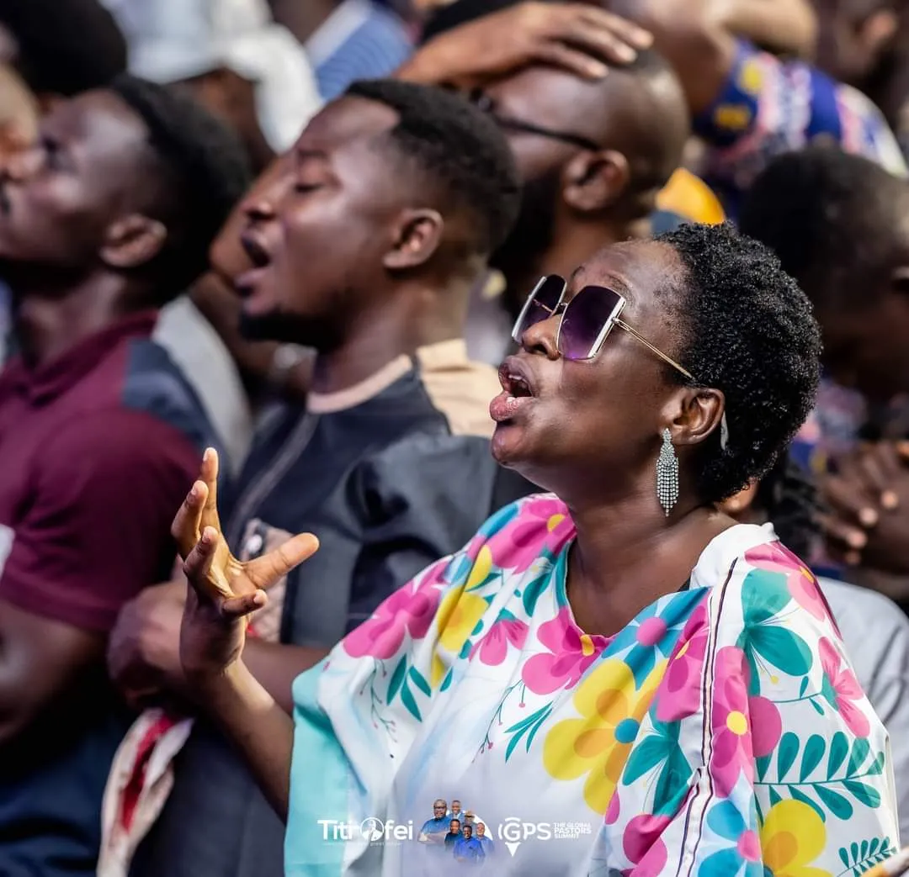

About
Meet Lady Prophetess Melissa Marie Justine Agbelom
Her Calling
Lady Prophetess Melissa Marie Justine Agbelom is a called and commissioned servant of God, carrying a strong prophetic and intercessory mandate for this generation. She stands as a vessel of divine restoration, raised to bring healing to broken lives, deliverance to the oppressed, and alignment to destinies according to the will and purpose of God.
Her Ministry
Her ministry is deeply anchored in fervent prayer, the uncompromising Word of God, and sensitivity to the leading of the Holy Spirit. With a deep passion for revival and spiritual transformation, she is committed to raising a generation of spiritually disciplined men and women who walk in holiness, obedience, and Kingdom authority.
Her Impact
Through her prophetic grace and intercessory ministry, many have encountered healing, restoration, clarity, and divine direction. She carries a burden not only to minister, but to build equipping believers to stand firm in faith, grow in spiritual maturity, and live out their God-given purpose with impact.
Her Life
Her calling reflects a life set apart for service, marked by humility, spiritual depth, and a relentless pursuit of God's presence, with a heart to see lives restored and destinies fulfilled.
Salvation & Spiritual Journey
My walk with Christ began through a personal surrender where I gave my life fully to Jesus Christ. From that moment, I experienced a transformation marked by peace, clarity, and a deep desire to know God.
Since then, my spiritual life has been intentional growing through prayer, fasting, and the study of God's Word while developing sensitivity to the Holy Spirit.
Calling & Assignment
My calling is centred on raising believers who are grounded in truth, healed in their hearts, and equipped to fulfil their purpose.
Prayer & Intercession
Standing in the gap for lives, families, and nations through fervent prayer and spiritual warfare.
Counselling & Healing
Bringing restoration to broken hearts and minds through biblical counsel and the power of the Holy Spirit.
Teaching & Discipleship
Equipping believers with the truth of God's Word for spiritual maturity and Kingdom advancement.
Spiritual Guidance
Leading individuals into their God-given purpose with clarity, direction, and divine wisdom.
Key Spiritual Encounters
Revelation of Identity
A revelation of identity and spiritual access through Scripture.
Divine Calling Confirmed
A defining encounter confirming divine calling and purpose.
Sovereignty & Purpose
A confirmation of God's sovereignty and purpose over my life.
A life set apart for service, marked by humility, spiritual depth, and a relentless pursuit of God's presence.
Gallery
